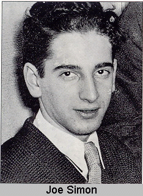
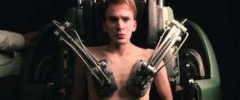
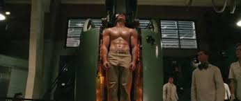
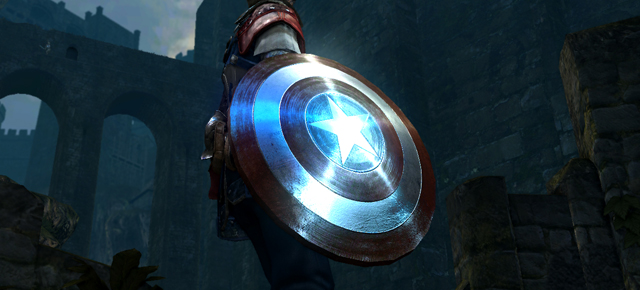
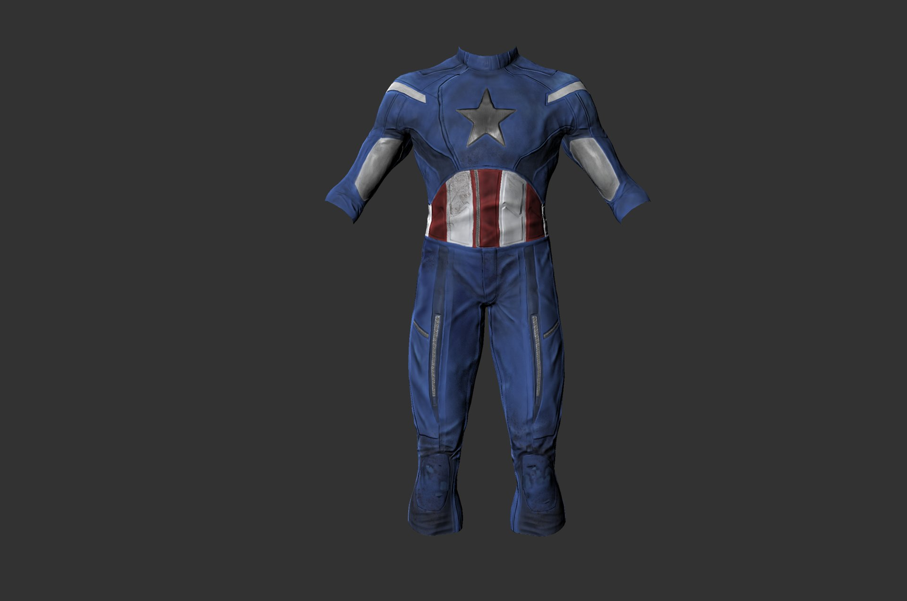
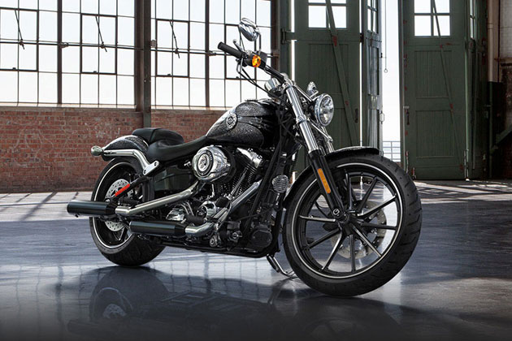

Premiere

In 1940, writer Joe Simon conceived the idea for Captain America and made a sketch of the character in costume. "I wrote
the name 'Super American' at the bottom of the page," Simon said in his autobiography, and then considered:
No, it didn't work. There were too many "Supers" around. "Captain America" had a good sound to it. There weren't a lot
of captains in comics. It was as easy as that. The boy companion was simply named Bucky, after my friend Bucky Pierson,
a star on our high school basketball team.
Simon recalled in his autobiography that Timely Comics publisher Martin Goodman gave him the go-ahead and directed that
a Captain America solo comic book series be published as soon as possible. Needing to fill a full comic with primarily one
character's stories, Simon did not believe that his regular creative partner, artist Jack Kirby, could handle the workload alone:
I didn't have a lot of objections to putting a crew on the first issue ... There were two young artists from Connecticut
that had made a strong impression on me. Al Avison and Al Gabriele often worked together and were quite successful in adapting
their individual styles to each other. Actually, their work was not too far from that of Kirby's. If they worked on it, and if
one inker tied the three styles together, I believed the final product would emerge as quite uniform. The two Als were eager to
join in on the new Captain America book, but Jack Kirby was visibly upset. "You're still number one, Jack," I assured him. "It's
just a matter of a quick deadline for the first issue."
"I'll make the deadline," Jack promised. "I'll pencil it all myself and make the deadline." I hadn't expected this kind of
reaction ... but I acceded to Kirby's wishes and, it turned out, was lucky that I did. There might have been two Als, but there
was only one Jack Kirby ... I wrote the first Captain America book with pencilled lettering right on the drawing boards, with very
rough sketches for figures and backgrounds. Kirby did his thing, building the muscular anatomy, adding ideas and pepping up the
action as only he could. Then he tightened up the pencilled drawings, adding detailed backgrounds, faces and figures.
Powers and Abilities
Captain America has no superhuman powers,
but through the Super-Soldier Serum and "Vita-Ray" treatment, he is transformed and his
strength, endurance, agility, speed, reflexes, durability, and healing are at the zenith of natural human potential. Rogers' body
regularly replenishes the super-soldier serum; it does not wear off.
The formula enhances all of his metabolic functions and prevents the build-up of fatigue poisons in his muscles, giving him endurance
far in excess of an ordinary human being. This accounts for many of his extraordinary feats, including bench pressing 1200 pounds (545 kg)
and running a mile (1.6 km) in 73 seconds (49 mph/78 kph). Furthermore, his enhancements are the reason why he was able to survive
being frozen in suspended animation for decades. He is highly resistant to hypnosis
or gases that could limit his focus. The secrets of creating a super-soldier were lost with the death of its creator, Dr. Abraham Erskine. In the ensuing decades there have been numerous
attempts to recreate Erskine's treatment, only to have them end in failure. Even worse, the attempts have instead often created psychopathic
supervillains of which Captain America's 1950s imitator and Nuke are the most notorious examples.
Rogers' battle experience and training make him an expert tactician and an excellent field commander, with his team mates frequently deferring
to his orders in battle. Thor has stated that Rogers is one of the very few humans he will take orders from and follow "through the gates of
Hades". Rogers' reflexes and senses are extraordinarily keen. He has blended judo, western boxing, kickboxing, and gymnastics into his
own unique fighting style and is a master of multiple martial arts. Years of practice with his near-indestructible shield make him able to aim
and throw it with almost unerring accuracy. His skill with his shield is such that he can attack multiple targets in succession with a single
throw or even cause a boomerang-like return from a throw to attack an enemy from behind. In canon, he is regarded by other skilled fighters as
one of the best hand-to-hand combatants in the Marvel Universe, limited only by his human physique. Although the super-soldier serum
is an important part of his strength, Rogers has shown himself still sufficiently capable against stronger opponents, even when the serum has
been deactivated reverting him to his pre-Captain America physique.
Rogers has vast U.S. military knowledge and is often shown to be familiar with ongoing, classified Defense Department operations. He is an expert
in combat strategy, survival, acrobatics, military strategy, piloting, and demolitions. Despite his high profile as one of the world's most popular
and recognizable superheroes, Rogers has a broad understanding of the espionage community, largely through his ongoing relationship with S.H.I.E.L.D.
He is a talented artist, and has worked on the Captain America comic book published in the Marvel universe. Other career fields include commercial
arts, teaching high school history, and law enforcement.
Although he lacks superhuman strength, Captain America is one of the few mortal beings who has been deemed worthy enough to wield Thor's hammer Mjolnir.
Weapons and Equipment
Captain America has used multiple shields throughout
his history, the most prevalent of which is a nigh-indestructible disc-shaped shield made
from an experimental alloy of steel and the fictional vibranium. The shield was cast by American metallurgist Dr. Myron MacLain, who
was contracted by the U.S. government, from orders of President Franklin D. Roosevelt, to create an impenetrable substance to use for tanks during
World War II. This alloy was created by accident and never duplicated, although efforts to reverse-engineer it resulted in the discovery of
adamantium.
Captain America often uses his shield as an offensive throwing weapon. The first instance of Captain America's trademark ricocheting shield-toss
occurs in Stan Lee's first comics writing, the two-page text story "Captain America Foils the Traitor's Revenge" in Captain America Comics #3
(May 1941). The legacy of the shield among other comics characters includes the time-traveling mutant superhero Cable telling Captain America that
his shield still exists in one of the possible futures; Cable carries it into battle and brandishes it as a symbol.
When without his trademark shield, Captain America sometimes uses other shields made from less durable metals such as steel, or even a photonic
energy shield designed to mimic a vibranium matrix. Rogers, having relinquished his regular shield to Barnes, carried a variant of the energy
shield which can be used with either arm, and used to either block attacks or as an improvised offensive weapon able to cut through metal with relative
ease. Much like his Vibranium shield, the energy shield can be thrown, including ricocheting off multiple surfaces and returning to his hand.
Captain America's uniform is made of a fire-retardant
material, and he wears a lightweight, bulletproof duralumin scale armor beneath his uniform for
added protection. Originally, Rogers' mask was a separate piece of material, but an early engagement had it dislodged, thus almost exposing his
identity. To prevent a recurrence of the situation, Rogers modified the mask with connecting material to his uniform, an added benefit of which was
extending his armor to cover his previously exposed neck. As a member of the Avengers, Rogers has an Avengers priority card, which serves as a
communications device.

Captain America has used a custom specialized motorcycle, modified by the S.H.I.E.L.D. weapons laboratory, as well as a custom-built battle van,
constructed by the Wakanda Design Group with the
ability to change its color for disguise purposes (red, white and blue), and fitted to store and
conceal the custom motorcycle in its rear section with a frame that allows Rogers to launch from the vehicle riding it.